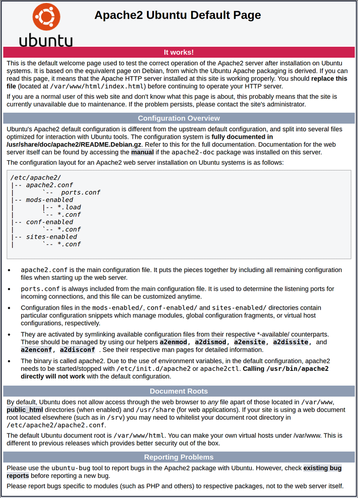
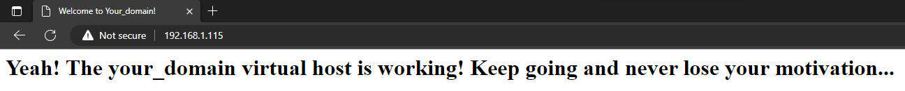

How to create your own Webserver with Apache on Raspberry Pi?
General
This setup should also work with Linux. This tutorial does not explain how to set up a Raspberry Pi OS or Linux.
I use a Raspberry Pi OS 64-bit Lite
How to install Apache?
Installation
Before the installation of Apache make sure your system is up to date and you have ufw installed:
sudo apt-get update
sudo apt-get install ufw
sudo apt-get install apache2
sudo apt-get update
sudo apt-get upgrade
Configuration information
apache2.conf: the main Apache2 configuration file. Contains settings that are global to Apache2.httpd.conf: historically the main Apache2 configuration file, named after the httpd daemon. In other distributions (or older versions of Ubuntu), the file might be present. In Ubuntu, all configuration options have been moved to apache2.conf and the below referenced directories, and this file no longer exists.conf-available: this directory contains available configuration files. All files that were previously in /etc/apache2/conf.dshould be moved to /etc/apache2/conf-availableconf-enabled: holds symlinks to the files in /etc/apache2/conf-available. When a configuration file is symlinked, it will be enabled the next time apache2 is restarted.envvars: file where Apache2 environment variables are set.mods-available: this directory contains configuration files to both load modules and configure them. Not all modules will have specific configuration files, however.ports.conf: houses the directives that determine which TCP ports Apache2 is listening on.sites-available: this directory has configuration files for Apache2 Virtual Hosts. Virtual Hosts allow Apache2 to be configured for multiple sites that have separate configurations.sites-available: this directory has configuration files for Apache2 Virtual Hosts. Virtual Hosts allow Apache2 to be configured for multiple sites that have separate configurations.magic: instructions for determining MIME type based on the first few bytes of a file
Configure Firewall
During installation, Apache registers with UFW to provide some application profiles that can be used to enable or disable access to Apache through the firewall. For more information see Setup UFW
List the application profiles ufw by entering the following:
sudo ufw app list
Apache: This profile opens only port 80 (normal, non-encrypted web traffic).Apache Full: This profile opens both port 80 (normal, unencrypted web traffic) and port 443 (traffic encrypted with TLS/SSL).Apache Secure: This profile opens only port 443 (traffic encrypted with TLS/SSL).
It is recommended to enable the most restrictive profile that still allows the traffic you have configured. Since we have not yet configured SSL for our server in this guide, we only need to allow traffic on port 80:It is recommended to enable the most restrictive profile that still allows the traffic you have configured. Since we have not yet configured SSL for our server in this guide, we only need to allow traffic on port 80:
sudo ufw allow 'Apache'
after it you should check the rules:
sudo ufw status verbose
you may need to reboot your system for the rule to take effect
sudo reboot
Test your webserver
Check if the apache2 webserver runs:
sudo systemctl status apache2
Now it’s time for the real test:
-go to the browser of your choice and search http://your_server_ip
-if you don’t know your ip enter the following command:
#couple of addresses seperate by space
hostname -I
#or your public ip
curl -4 icanhazip.com
The default webpage should look like this:
Manage apache
#stop webserver
sudo systemctl stop apache2
#start webserver
sudo systemctl start apache2
#restart webserver
sudo systemctl restart apache2
#reload apache to take affect of configuration changes, maybe it need a restart
sudo systemctl reload apache2
#by default apache start automaticly after booting the server th disable it use
sudo systemctl disable apache2
#to reactivate automaticly start after boot use
sudo systemctl enable apache2
How to use a virtual hosts with apache?
Configure virtual host
If you are using the Apache web server, you can use virtual hosts (similar to server blocks in Nginx) to include configuration information and host more than one domain on a single server. We set up a domain named your_domain, but you should replace that name with your own domain name.
Apache on Ubuntu 20.04 has a server block that is enabled by default and configured to serve documents from the /var/www/html directory. This works well for one site, but can become cumbersome if you are hosting multiple sites. Instead of changing /var/www/html, we create a directory structure within /var/www for a site your_domain, leaving /var/www/html as the default directory that is provided when a client request has no matching sites.
Create the directory for your_domain
sudo mkdir /var/www/your_domain
Next, assign ownership to the directory using the $USER environment variable:
sudo chown -R $USER:$USER /var/www/your_domain
Your web root permissions should be correct if you have not changed your umask value, which sets the default file permissions. To ensure that your permissions are correct and the owner can read, write, and execute the files, while groups and others are granted read-only and execute-only permissions, you can enter the following command:
sudo chmod -R 755 /var/www/your_domain
Next create a example website with the text editor of your choice in our case nano
sudo nano /var/www/your_domain/index.html
Now you can add your custom html code or use our little test template:
<html>
<head>
<title>Welcome to Your_domain!</title>
</head>
<body>
<h1>Yeah! The your_domain virtual host is working! Keep going and never lose your motivation...</h1>
</body>
</html>
safe and close: ctrl + x for exit y for yes and finally hit enter
You need to create a virtual host file with the correct policies so that Apache can serve this content. Instead of changing the default configuration file directly in /etc/apache2/sites-available/000-default.conf, create a new one in /etc/apache2/sites-available/your_domain.conf:
sudo nano /etc/apache2/sites-available/your_domain.conf
Add the following configuration block, which is similar to the default but updated for the new directory and domain name:
<VirtualHost *:80>
ServerAdmin webmaster@localhost
ServerName your_domain
ServerAlias www.your_domain
DocumentRoot /var/www/your_domain
ErrorLog ${APACHE_LOG_DIR}/error.log
CustomLog ${APACHE_LOG_DIR}/access.log combined
</VirtualHost>
You will notice that we have updated DocumentRoot to our new directory and ServerAdmin to an email that can be accessed by the site admin of your_domain. We also added two policies: ServerName, which defines the base domain that should match this virtual host definition, and ServerAlias, which defines other names that should match like the base name.
After you finish safe and close: ctrl + x for exit then y for yes and finally hit enter
Now activate the file with the tool a2ensite:
sudo a2ensite your_domain.conf
Disable the default site defined under 000-default.conf:
sudo a2dissite 000-default.conf
Next test configuration errors:
sudo apache2ctl configtest
You should see the following output:
Output
Syntax OK
Restart Apache to deploy your configurations:
sudo systemctl restart apache2
Apache should now be set up for your domain name. You can test this by navigating to http://your_domain, where you should see something similar to the following: